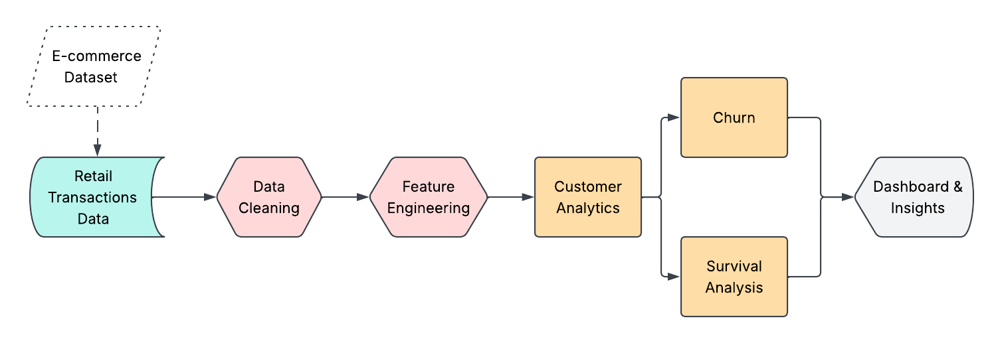
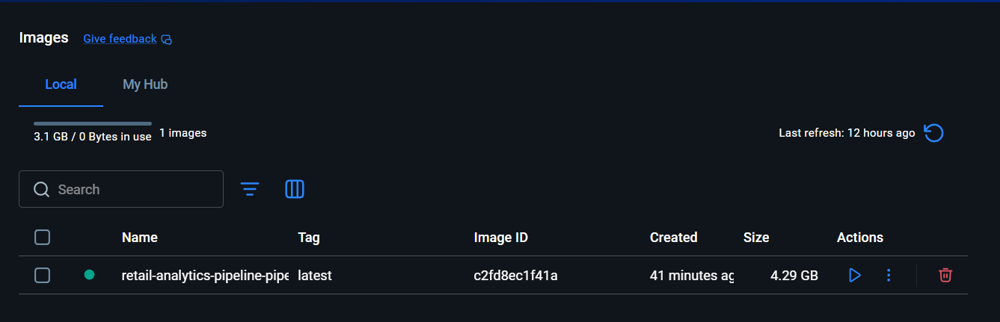
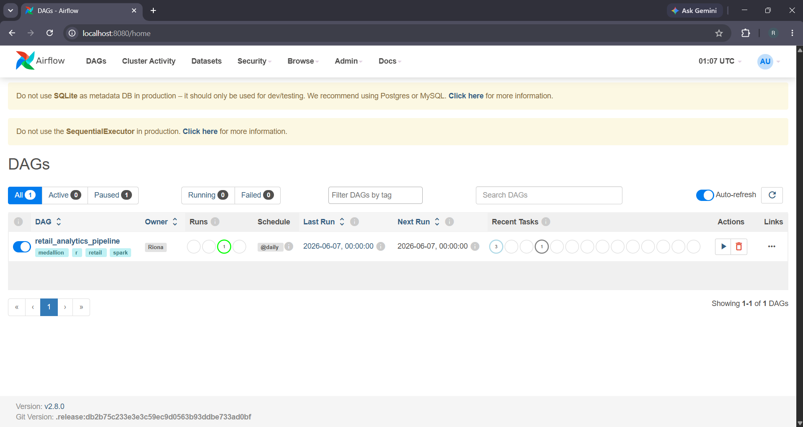
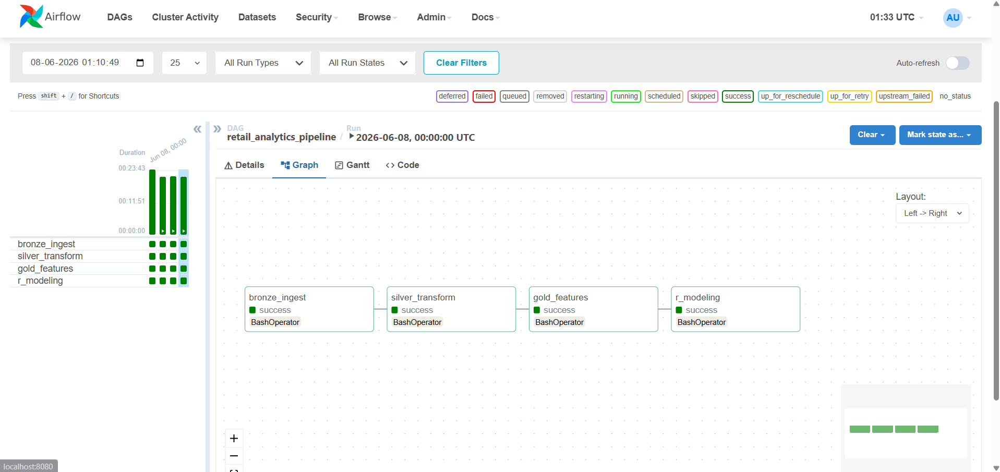
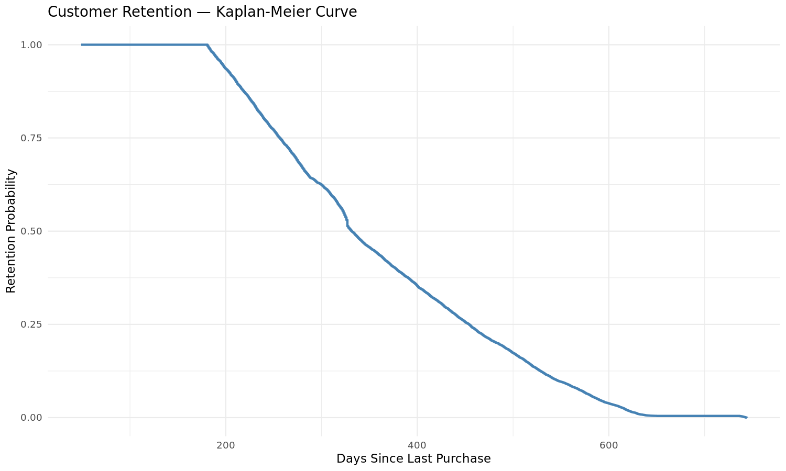
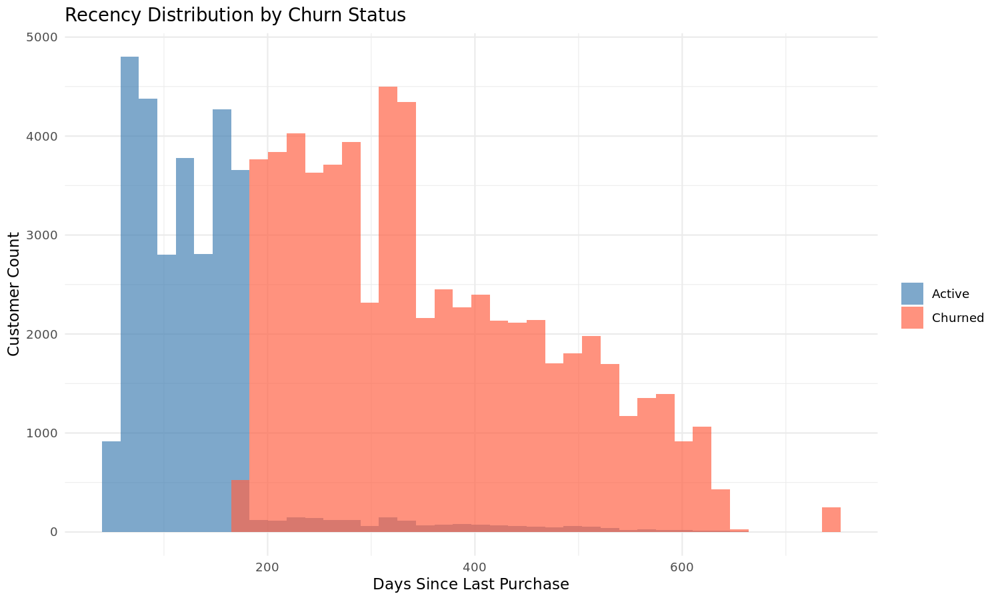

An end-to-end analytics project that studies customer purchasing behaviour using retail transaction data. The project performs customer-level feature engineering, churn analysis and survival analysis to generate business insights.
Understand customer purchasing behaviour and visualize customer retention trends from retail transaction data.
While learning about real-world machine learning systems, I became interested in how businesses use customer data to make decisions rather than focusing only on predictive model accuracy. Retail is a domain where customer transaction data can provide valuable insights into purchasing behaviour, customer retention and churn. This project explores how an analytics pipeline can transform raw transaction data into meaningful business insights.
The project follows an end-to-end workflow beginning with retail transaction data and progressing through data cleaning, feature engineering, analytics and visualization.

Step-by-step workflow of the retail analytics project.
The analytics workflow is orchestrated using Apache Airflow and containerized with Docker.

Containerized environment used to execute the analytics pipeline.

Scheduled execution of the analytics workflow.

Sequential execution of each pipeline stage.

The Kaplan-Meier curve estimates how customer retention changes over time.

Customers with higher recency values are more likely to have churned.